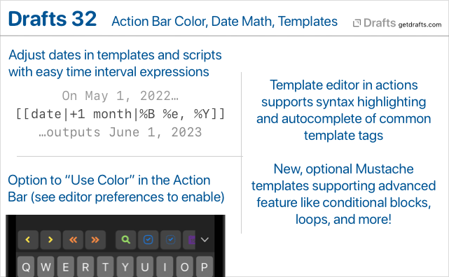
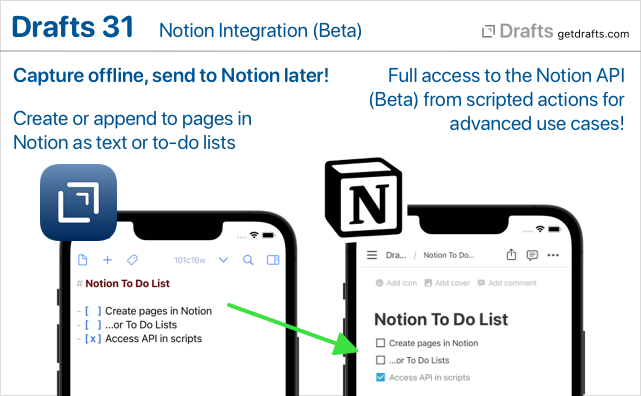
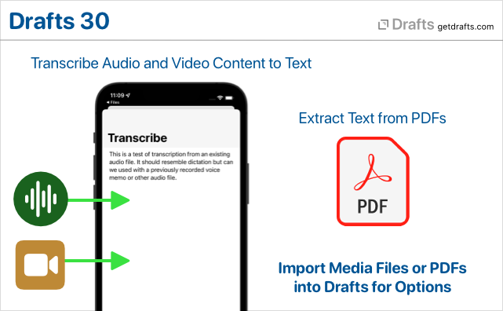
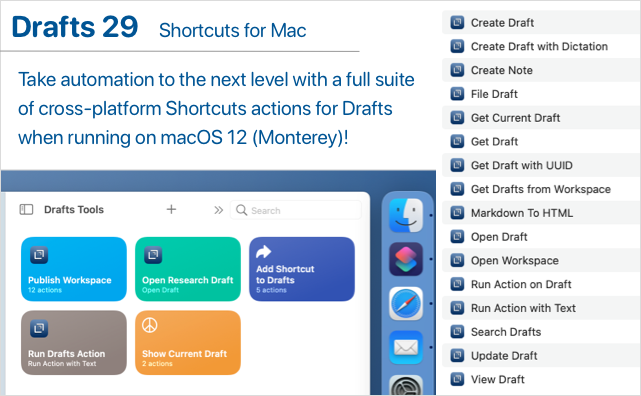
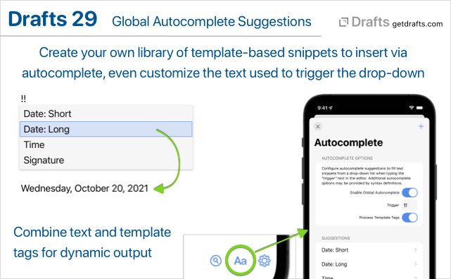
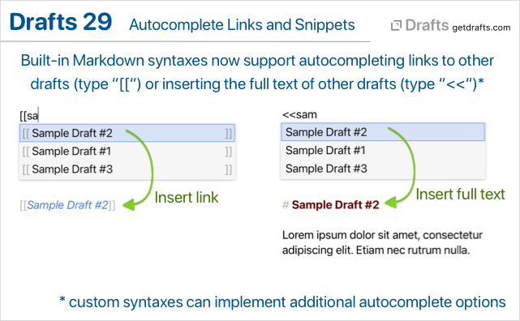
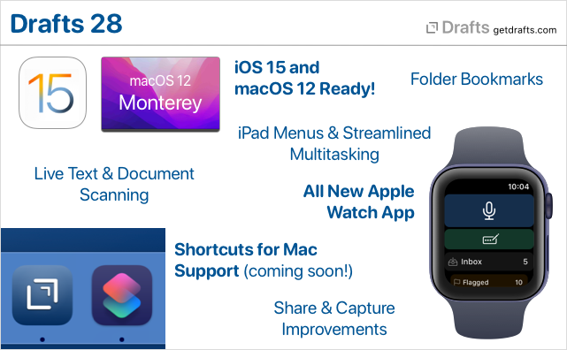
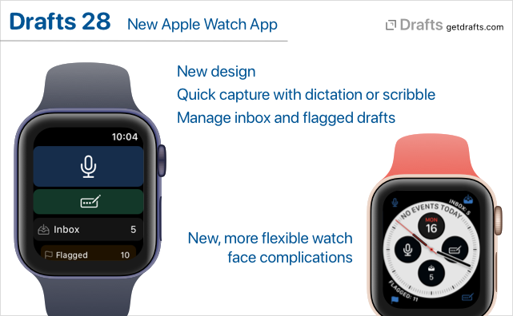
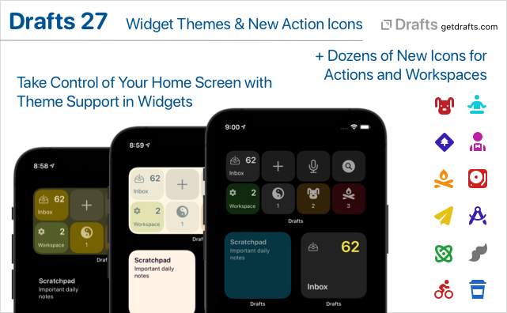
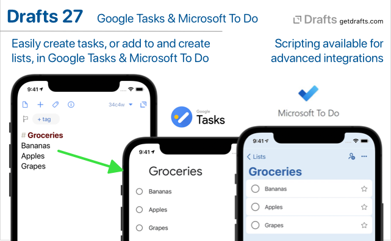

Release Notes
Drafts updates often. Keep up with the latest additions and fixes below. You can also always get highlights of the latest additions in the app via “What’s New” (Settings on iOS, Help menu on Mac).
32.0

What’s New
Action Bar Tint Colors
For those who are fond of using color to distinguish items on screen, there is now an option to use action tint colors in the Action Bar. To enable on iOS, scroll to Action Bar options in Aa editor settings. On Mac, toggle menu item in Action Bar’s group selection drop-down menu.
Date Math - Travel in Time, Sort of…
It is sometimes useful to output a date that is relative to another date (usually the current one), adjusted by some time interval. It has always been possible in script to create and adjust future and past dates, but now it is easier with the addition of a new method to adjust dates using simple date math expressions.
This begins with a new way to create related date expressions, which consist of a list of plus or minus time intervals which can applied to a date. Each expression look like (+|-)(integer) (unit), and can be combined in a list to make multiple adjustments to a date. A couple of quick examples:
+1 year: Add one year to the date.-2 months -6 hours: Subtract two months and six hours from date.
Units supported are: year, month, day, hour, minute, second. Units can be used in either singular or plural forms.
These expressions can be used in JavaScripts with the adjustDate(date, expression) function, or by providing an additional expression argument, along with the strftime formatting argument, in template tags which work with date. Those tags are the [[date]], [[time]], [[created]], and [[modified]] tags. Again, by example:
[[date|+1 year|%Y-%m-%d]]: Current date next year. So, on May 1, 2022, this would output: 2023-05-01.[[created|-1 month|%Y-%m-%d]]: Output a month before the creation date of the draft.
Adjustment expressions are calendar-aware, such that adding 1 month to May 31 would result in June 30, since June does not have a 31st.
A couple of ready to use examples:
- Insert Tomorrow: Action which inserts tomorrow’s date at the cursor location in the editor.
- Date: Tomorrow Autocomplete Suggestion: Install a global autocomplete suggestion which inserts tomorrow’s date.
Mustache Templates
Drafts templates, with their square-bracket, [[title]]-style tags are still the default throughout actions, but with this update we have introduced the option to use an alternate template engine based on Mustache templates.
Mustache templates provide some additional power, like the ability to have conditionally rendered blocks, loop over arrays, insert information from other drafts, as well as more powerful filtering options. For details, see the Mustache documentation.
Mustache templates are available as a option on all long-form templates in action steps, can can also be triggered via script using the draft.processMustacheTemplate function.
Using Mustache Templates for Safari Web Capture
If you often capture using the share extension and Safari, you might be interested in switching your web capture template to use Mustache. This has the advantage of being able to use conditional sections to only render part of the text template for the captured text selection if a selection exists.
Improved Template Editing
Drafts now includes basic syntax hightlighting definitions for both Drafts templates, and the new Mustache templates. When editing long-form templates in actions steps, the templates can now (optionally) be opened in an editor with syntax highlighting and basic autocomplete for common tags. Use the edit button by the template in the action editor to open the template editor.
Other Changes and Updates
- All Platforms
- New: “Include Action” step configuration now includes “Select” button to allow selection of an existing action, rather that requiring typing of the action name.
- Fix: TaskPaper syntax did not size indents correctly.
- iOS
- Fix: External keyboard navigation of dialogs (up-down arrows, etc.) was not working on iOS 15.
- Fix: Share button with options was not visible on in the Preview window on iPad.
- Change: Navigation to markers should respect the “Edit on selection” preference, not activating the editor after scrolling to the properly location if it off.
- Mac
- Change: When new modal capture windows are opened via Services or Sharing, they should appear more as modals with a “Cancel” button to clarify that they are transient and cannot be closed without losing the text.
- Fix (Mac): Issue were editor undo could corrupt if using the “Undo” command on an empty, new draft.
- Fix (Mac): If paragraph number display was active, and the window was narrow, text might not wrap properly and it would get clipped.
31.2
- New (Mac): Ability to select alternate dock icons in Editor Preferences. Not quite like changing the app icon on iOS, but the best you can do with native Mac APIs. Be aware the alternate dock icon:
- Only changes the app icon when it appears in the Dock.
- Only changes the app icon in the Dock while the app is running.
- New: A few new monochrome alternate icon options, with dark logo.
- Fix: Update Dropbox authentication to avoid issue with credentials expiring shortly after creation, required re-authentication.
- Fix (Mac): Issue with side panels overlapping editor text after being hidden-shown in some cases.
- Fix: Drafts returned by
Draft.queryByTitlemight not update properly if modified in a script while also being loaded in the editor. - New (iOS):: Commands under the draft icon long-press menu to go directly to version and action log histories.
- Change (Mac): Side panels no longer animate when hiding and show.
31.1
- Fix: Issue with draft scrolling to top when editing some lists with typewriter scrolling enabled.
- Fix: Find window not remembering options.
- Fix: Error importing older exported Workspaces.
- New (Mac): Add “flag” toolbar button option.
- Change (Mac): Allow “open in new window” windows to remember last used size.
- Change (Mac): Update Markdown syntaxes to better match parser output for middle of the word bold and italics, which are only supported when using asterisks, not underscores.
- Change: Update to
2022-02-22version of Notion API and drop “(Beta)” label, since Notion announced the API is out of beta. - Change: Break up longer drafts into more paragraph blocks when posting to Notion, to avoid block size limits.
- Change: Adjustments to tag filtering pane.
- Fix: VoiceOver text for word/character counts should respect settings to hide/show those counts.
- Fix: VoiceOver should include tags in draft list.
31.0
What’s New
Interface Refresh
Lots of general usability and interface and improvements, including updated icons, some button re-organization, and a variety of new features. Highlights:
- iOS:
- Quick Search is now in the top toolbar. Note that you can tap and hold on the search button for quick access to “Find in Draft…” as well.
- Menus to load workspaces and action groups are now
(v)down-arrow menus at the top of the list. If you would also like to access from the bottom of the screen, enable workspace/action group bars in(...)list options - The
(i)detail button was removed to reduce clutter. Long press the draft icon at the top left of the editor and select “Get Info” to access draft details. - Actions can be accessed from the Action Bar above the keyboard without loading the action group in the bar. Tap the group icon at the left to select groups, and each group has a list icon along with it which will open a menu of actions in that group. This makes it easy to access seldom used text manipulation actions without swapping out the group displayed in the action bar.
- New options (in
Aaeditor settings) to toggle visibility of the word, character, and selection counts. These can also be toggled quickly by long-pressing theAabutton.
- Mac:
- Workspace and action group bars are now available at the bottom of the list panes for quick access to loading groups and workspaces in the lists. These can be toggled on and off in the
Viewmenu.
- Workspace and action group bars are now available at the bottom of the list panes for quick access to loading groups and workspaces in the lists. These can be toggled on and off in the
- Configure Window action step. Provides an easy way to create actions that configure the editing window, hiding/showing side panes, switching pinning/link mode, and loading workspaces and/or action groups. Great for jumping to a particular workflow. (more)
- Show/hide character, word, and selection counts. Options in the
Aaeditor settings view. These options can quickly be toggled using the long-press menu on theAabutton. - Focus Mode is now Pinning. The “focus” name was a bit confusing, and the eyeball icon did not clarify what it did. Apple adding the “Focus” system feature didn’t help, either. This mode has been replaced by the “pinning” option, which pins the current draft in the editor, temporarily disabling the “new draft after” timeout. (more)
- New setting available to control what happens in the editor after an action’s “After Success” setting files a draft in the archive or trash. The default is to open a new draft, but, optionally, the “next draft” from the current draft list can be loaded. This was a feature of focus mode, but one that few people knew about.
- Workspaces Backups: Workspaces are now included in periodic backups. Options in Settings > Backups. (more)
Notion Integration (Beta)
This version introduces basic integration with the Notion online project management system. Notion’s API is still in beta but has become stable enough to start offering integration in Drafts. Be aware that aspects of this functionality may change or stop working if Notion makes changes in its API during the development process. We also plan to expand functionality based on feedback, so if you are using Drafts with Notion, please let us know other features you would like to see added.

This initial integration provides:
- Notion Action Step that allows easy configuration of actions which create or append to pages in Notion as either text or todo lists.
- The
Notionscript object, which provides access to the entire Notion API for advanced use cases.
For details, example actions, etc., see our Notion Integration Guide.
Maintenance Tasks
New “Maintenance” view in Settings/Preferences. This view is a home for completely optional periodic maintenance tasks to help restore defaults, clean up data you may no longer care about, or improve performance. Make sure you understand what the tasks do before running one because some are destructive and not reversible. Details on available tasks in the User Guide.
Other Changes and Updates
- All Platforms
- Change: Action steps configurations can now be viewed as read-only in the free version to allow for better content review.
- Fix: Revamp handling a number of text modifications in the editor, both via the
editorscript object in actions, and via autocomplete, auto-match, and list completions, to better participate in the editor’s undo/redo stack and avoid a few cases where undo could stop functioning. - New: WordPress action step now includes the option to specify whether user comments should be allowed on the resulting post.
- Fix: Revamp handling a number of text modifications in the editor, both via the
- Fix: Autocomplete canceling when typewriter scrolling enabled.
- New: Individual autocomplete items can be shared as URLs which can be used to installed in other installations of Drafts.
- Change: Action steps configurations can now be viewed as read-only in the free version to allow for better content review.
- Scripting Changes:
Reminderscript object now hasstartDate,startDateIncludesTime, andcompletionDate, andlocationproperties available.editor.focusModeEnableddeprecated, and replaced byeditor.pinningEnabled(still works, may be phased out on future release)FileManager.existsmethodActionLog.statusreadonly property to indicate status (“completed”, “failed”, etc.) of the log entry.
- iOS
- Fix: Clearing search in the action list would not reload the last loaded group if a group had not be selected since cold start of the app.
- Mac
- Fix: Issue deleting actions shared to the Directory in the “Manage Actions” view.
- Fix: Paragraph numbers not always redrawing on scrolling.
- Apple Watch
- Append/Prepend options in Watch app now have text input with options (pencil icon) options to allow access to scribble on Series 7 watches.
30.1
- Operations to rename and delete tags should look also look for drafts with those tags in the trash.
- Better handle import of text files with some uncommon text encodings.
- Crasher using share extension for some users.
- Misc. small fixes.
- Updates to default actions groups for new installs. Note that the default groups can be re-installed from the Directory, if desired.
30.0
What’s New

Transcribe Text from Audio and Video Files
Drafts now registers itself to open most common audio and video formats. If you open an audio or video file in Drafts, you will be prompted with an option to transcribe text using speech recognition. Speech recognition will process the audio in the same way as dictation, so dictation commands for punctuation, etc., are supported.
This is most useful for transcribing the content of single-speaker voice audio, like a voice memo, or recorded lecture, but it will happily attempt to transcribe other forms of audio as well, though the quality of the results may vary.
To try it out:
- iOS
- Tap and hold the “+” button, and select “Transcribe…”. You will be prompted to select an audio or video file.
- Share any audio or video file from other apps, including Files and Voice Memos, to Drafts.
- Mac
- Select
File > Import...from the main menu, and choose and audio or video file. - Drag and drop an audio or video file on the Drafts app icon.
- Select
If you plan to use this transcription, please read the full documentation to understand its capabilities and limitations.
Extract Text from PDFs
If you attempt to open a PDF file in Drafts, you will now be offered the option to extract text from the PDF into a new Drafts.
To try it out:
- iOS
- Tap and hold the “+” button, and select “Import File…”. Select any PDF file.
- Share any PDF file from other apps, including Files, to Drafts.
- Mac
- Select
File > Import...from the main menu, and choose a PDF file. - Drag and drop a PDF file on the Drafts app icon.
- Select
Extraction will only grab actual text content from the PDF. Some PDF files have embedded image content and will not work with this feature.
Learn more about PDF Text Extraction
Other Changes and Updates
- Change: Replaced microphone icon on Apple Watch complications and buttons. Since Apple has made it so it is not possible to launch input directly to dictation on watchOS 8.1, it no longer makes sense to use microphone icon. (PS: Please let Apple know if you do not like this change! We’d love to get back the ability to go straight to dictation.)
- Change: Change sort order of trash to use accessed date/descending to make it easier to find and restore items recently added to the trash.
- Change:
[[line]]template tag when used with specifying a line argument, now returns the text of the current selection extended to the beginning and end of the lines. Useful for grabbing the current line text in an action without needing to select the text first. - Fix (iOS): Issues sorting actions upwards in the action list.
- Fix: Issue appending to files in Bookmark folders from different devices.
- A variety of performance improvements and fixed for visual glitches.
29.1
Bug fix release for a few issues in the inital 29.0 release.
All Platforms
- Fix: A few specific icons would cause problems when the action/workspace they were assigned to was displayed in a widget.
- New: “Last Draft” widget command.
- Change: Create additional tab stops in editor to allow for deeper indenting.
iOS
- Fix: Issue re-ordering actions in the action list.
- New: Option to clear recent tag list in tag suggestion drop-down.
- Change: Pressing return on virtual keyboard should accept an autocomplete value.
Mac
- Fix: Widgets not functioning properly on Big Sur.
29.0
What’s New
Shortcuts for Mac / macOS 12 Support
Drafts provides a wide variety of actions for use in Apple’s automation app, Shortcuts. These can be used for simple things like creating a new draft, opening Drafts directly to specific workspaces – or advanced processing by querying and updating multiple drafts.

With macOS 12, Apple has brought the power of Shortcuts to the Mac, and Drafts is ready. All Drafts’ Shortcuts actions now work on both iOS and Mac, and shortcuts created using these actions work cross-platform, allowing you to create, modify, and use those shortcuts on all your devices!
Autocomplete
Drafts now includes an extensible system to provide drop-down autocomplete suggestions while typing in the editor. Autocomplete includes a global system for creating and inserting text snippets. Additional autocomplete suggestions can also be provided by syntax definitions.
Global Autcomplete Suggestions
Do you have snippets of text you reuse regularly? Email addresses? Templates? Then autocomplete suggestions will be a handy addition.

Visit the Autocomplete tab in Editor Preferences (Aa button below editor) to get started configuring your suggestion drop-down items. Set the “Trigger” text to control what sequence of characters will trigger the suggestion drop-down to appear, and add items for frequently used snippets. Suggestions can use Drafts template tags to insert the current date, location, or other values.
Link Completion and Draft Insertion
Drafts built-in Markdown syntaxes (Markdown, GitHub Markdown, and MultiMarkdown) now include two additional autocompletion features to work with other drafts in your library:
- Type
[[to trigger auto-completion of[[wiki-style]]links to other drafts by title. - Type
<<to trigger the selection of another draft and insert the full content of that draft.

These features are implemented using a new set of configuration options available to all syntax definitions. If you create custom syntax definitions, and would like to add this functionality (or similar) to your custom syntax definitions, take a look at the related documentation on autocomplete in syntaxes
Other Updates and Fixes
All Platforms
- Fix: A numbered list item with more than one digit, indented 4 characters, would be treated as code block in Markdown syntaxes.
- Fix:
/openURL withtitleparam would not properly find drafts with “:” in the title parameter.
iOS
- Fix: “Last Draft” option available with long press on app icon would not work properly on iOS 15 if the app was already running and the new draft timeout had passed.
- Configuration tweak to allow the “Add Link” option to work to create links to the current draft in Quick Notes.
28.1
Bug fix release addressing a few issues in release 28:
- General
- Change: Improve efficiency of workspace count calculations for widgets to avoid an issue that could result in a blank widget in some configurations.
- Change: Internal link previews now only work on iOS 15 to workaround issue that conflicted with use of cut/copy/paste menu.
- New: “Process Template” shortcut action which takes a template and draft and runs the text through the Drafts template engine to expand tags (like [[body]], [[title]], etc.)
- Fix: Prevent case where sending file to share extension would not capture content, or duplicate content.
- Change to find/replace regular expression configuration to support replacement of positive lookahead constructs.
- Fix: Case where an internal link by title could find drafts that had the query title string in some place other than the first line.
[[hashtags]]template tag should replace spaces in tags with “-“.availabilityproperty ofEventobject should be a read/write property, not read only.- Address several VoiceOver issues.
- iOS-Watch Only
- Fix: Add keyboard shortcuts (⌘-, option-⌘-,) back for Settings/Preferences and Editor Settings/Preferences.
- Fix-Watch: Background scheduling crash
- Mac Only
- Fix: Issue re-showing action bar if it was hidden.
- Fix: Issue configuring widgets on macOS 11 (Big Sur).
- Fix: Last line in action script editor clipping.
28.0
What’s New
Ready for iOS 15 and macOS 12

Drafts is ready for iOS 15 and macOS 12! Updated for compatibility, of course, but also to take advantage of some of the great new features. New details below, but Drafts works great with “Live Text” to capture text from images, has full support for Shortcuts on the Mac, and brings great new iPad features, like powerful external keyboard menus.
New Apple Watch App

We have re-written the Drafts Apple Watch app from the ground up to use the latest watchOS technologies. It’s still the best, easiest way to capture ideas on the go, but has a few new tricks:
- Multiple complication types to capture, capture with options, or see your inbox or flagged draft count.
- Inbox drafts synced to watch now reflect your default workspace options on the phone.
- Flagged drafts now also synced to the watch.
- Requires watchOS 7.1 or greater.
Note that you may need to reconfigure your complication options after upgrade, especially if you want auto-capture, which was previously a setting and not based on the complication used.
Learn More About Drafts on Apple Watch →
Shortcuts Support on macOS 12
We’re ready for Shortcuts on the Mac! It’s just not quite ready for us. Look for full, cross-platform support for all of Drafts’ Shortcuts actions when macOS 12 (Monterey) is released in the coming weeks!
In the meantime, enjoy these new shortcut actions on iOS:
- Get Current Draft: Retrieves the draft object for the draft currently open in the editor.
- Open Draft Enhancements: The “Open Draft” shortcut action now has a bunch of additional optional parameters to configure Drafts while opening - to load a workspace, actions groups, hide/show the drafts and action lists, etc. Great for bookmarking a specific set of options in a Shortcut.
Folder Bookmarks
Up to now, Drafts file actions and scripts have been limited to working with files in the “Drafts” folder in iCloud Drive (or by working directly with cloud-provider APIs, like Dropbox and Google Drive). With folder bookmarks, it is now possible to grant permissions to additional folders outside the Drafts App Sandbox, making it easier to integrate with other apps and services, to, say, export a draft content to another system - like an Obsidian Vault, etc.
Document Scanning and Live Text Support
Drafts has been tested and works great with the new “Live Text” features in iOS 15 and macOS 12. In addition, we have incorporated document scanning to OCR directly in the iOS app. Tap and hold the “+” and select “Scan Document” to open the document scanning camera. It supports scanning multi-page documents, and directly runs the results through OCR to create a new draft with the result text.
Learn More About Live Text & Scanning →
Share Extension and Capture Window Updates
Drafts capture flow used in the iOS Share extension and the “Capture” window on Mac, has received a number of updates:
- Both now remember your recently used selections for appending and prepending to existing drafts, to make it easier to re-use active drafts.
- The Mac Share extension now displays in a new capture window, allow preview/editing of captured text as well as appending-prepending to other drafts - more like the iOS Share extension.
- Mac Services menu now contains “Capture to Drafts” and “Capture to Drafts with Options” services to send text selections to Drafts from anywhere in the system. The “with Options” version displays a capture window, while the other version capture silently as a new draft.
- New
/captureURL scheme, and Shortcut “Show Capture” action, allow you display the capture window in app, optionally pre-filled with text and tags. This is useful in capture workflows from other apps, as well as web bookmarklets.
Learn more about the iOS Share Extension and Mac Capture Window
General Improvements
- New tag suggestion interface on iOS to make it easier to tag your drafts with just the right tags.
- On iOS, long press on links to other drafts now generates a preview and several command options for the draft. This includes
[[wiki-style]]links, ordrafts://openlinks in link mode. - On Mac,
command-clickon links to other drafts to open them in a new window. - Tags in the tag filter pane now have contextual menu (tap and hold) with “rename” and “delete” commands to bulk manage tags. These options already existed in the draft list “Operations” commands, but these versions pre-fill the tag value for better accuracy.
Other Updates and Fixes
All Platforms
- New “What’s New” screen accessible via Settings > What’s New (iOS) or Help > What’s New (macOS)
- “Run Shortcut” action step has new “Return to Drafts” option. If disabled, Drafts will not include callback parameters to return to Drafts after completing the Shortcut. If you do not care about a result from Shortcuts, and wish to end up in a different app when the shortcut finishes, disable this option.
[[hashtags]]template tag. Returns assigned tags as comma-separated list, with each tag prefixed with a “#”. Convenience tag to remove the need to script this conversion when exporting to systems that use hash tags.- Estimated read time now calculated and displayed in draft detail
(i)screen. - Fix: Markdown syntaxes not recognizing [ref][links] with space.
- Fix: After success “Trash” would not load next draft properly in focus mode.
iOS
- Refactor the next-previous button logic because it was not updating properly in some cases.
- A few new app icon options.
- Require iOS 14.1 or greater.
- Remove pre-iOS 14 “Today” widgets.
Mac
- More toolbar options to customize your toolbar. Focus, link modes, preview, arrange buttons now available.
- List types returned from AppleScript not converted properly to JavaScript arrays.
Scripting, Shortcuts, and URL Schemes
version.delete()function to allow scripted deletion of versions in the version history. (docs)ActionLogscript object used to read and manipulation entries in the Action Log. Generally accessed from thedraft.actionLogsproperty. (docs)/scandocumentURL scheme. (docs)editor.scanDocument() -> stringfunction. Also similar toeditor.dictate()function, opens the document scanner and returns any OCR results as a string which you can do with as you please. (docs)- New “Get Current Draft” shortcut action retreives the draft currently open in the main editor.
- “Open Draft” shortcut action has additional options to configure state of window (show/hide side panes, load workspace, etc. - docs)
/openand/createURL schemes now support several additional parameters to configure the environment (docs):showDraftList[true/false]showActionList[true/false]loadWorkspace,loadActionGroup,loadActionBarGroup: take names of valid group/workspaces and applies them
27.0
What’s New
Custom Theme Support for Widgets + New Action Icons
It is now possible to select custom light and dark themes for Home Screen (iOS) and Notification Center (macOS) widgets from the built-in and custom themes you have installed in Drafts. To make changes, tap and hold on a widget, select “Edit Widget”, and make changes in the widget configuration.

We have also added dozens of new icons for actions/workspaces in categories like Health, Animals, Education, Email, and more.
If you create custom themes, you may wish to add the following new keys in colors.interface: widgetBackground, widgetBackgroundAlternate, widgetForeground, widgetForegroundAlternate. If not present, these values will fall back to existing related keys: background, backgroundCollection, foreground, so existing themes should work out of the box without updates.
Google Tasks and Microsoft To Do Integration
Extensive integration with two of the most popular task managers: Google Tasks and Microsoft To Do. This version adds new action steps which can create individual tasks, or add each line of draft as a task, to lists in either Google Tasks or Microsoft To Do.

Both services are available via scripting, with powerful script objects with convenience methods for creating and updated tasks and lists, while also exposing the full APIs to advanced users.
For sample actions and details:
Arrange Mode Improvements
Arrange mode has better external keyboard support, especially on iOS, including: - Esc and ⌘-return to cancel or accept changes - Arrow keys navigate up-down in the list - ⌘-up/down move the selected line up and down in the list.
Other Updates and Fixes
- Change (iOS): iOS 12 no longer supported.
- Fix (iOS): URL scheme could be called twice on cold start of app.
- Fix: Better support for import of exported files from Drafts 3 or earlier
- Script changes:
Eventobject properties:identifierattendeesarray to access (readonly) attendee list.availabilitystring with valuesbusy,free,tentative,unavailable,notSupported
Reminderobject properties:identifier
- Fix: Drafts set in the editor via
editor.loadshould get added to recent drafts list. - Fix (iOS): Messages app background in dark mode had issues.
- Fix (macOS):
loadActionGroupandloadActionBarURLs were not supported on Mac. - Fix (macOS): Possible fix case where “Undo” would stop working in the editor until the app was restarted.
- Refactor assets to save on binary size.
Changelog Archive
Starting with version 27, the iOS and Mac changelogs were merged on this page. For previous release notes, see archives below.